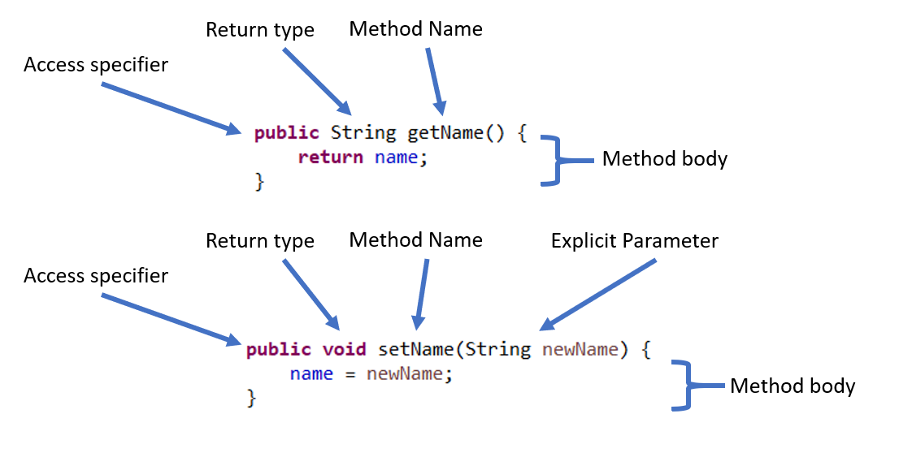

This lesson is a bit more hands on, so I'd highly recommend you watch and follow along with the video otherwise this written part might be a bit confusing. This written part is going to be a walkthrough writing our Person class.
Here we attempt to make a new Person in our main method, and we also set up our Person class.
Click the buttons!
Here we see examples of two methods I have created
In the next two sections we are going to be creating our own methods, but before we do that let's go over some important parts of a method.
Here we make and use "Setter" methods.
Click the buttons!
Here we make and use "Getter" methods.
Click the buttons!
Note: save your Person class we will be using it in the future.
Description: Congratulations! writing the Person class means you have officially written your first Java Class. Now you are going to expand on your knowledge of classes build another class by yourself.
Instructions:
Description: This exercise is what we call tracing and these types of questions will frequently appear on exams. As a side note when I was a student. I hated these types of questions because I thought they were useless, but tracing is actually a beneficial skill to have. It helps when there is a bug in your code and you need to look line by line through your code to see what it is doing. It will also help if you are ever in a situation where you are looking at someone else's code and you need to figure out what it does. For example, as a software engineer part of you job might be to figure out and debug code written by a colleague.
Instructions: Look at the following main method and Person class, and determine what is printed to the console at the end of the program.
Enter Answer Here: